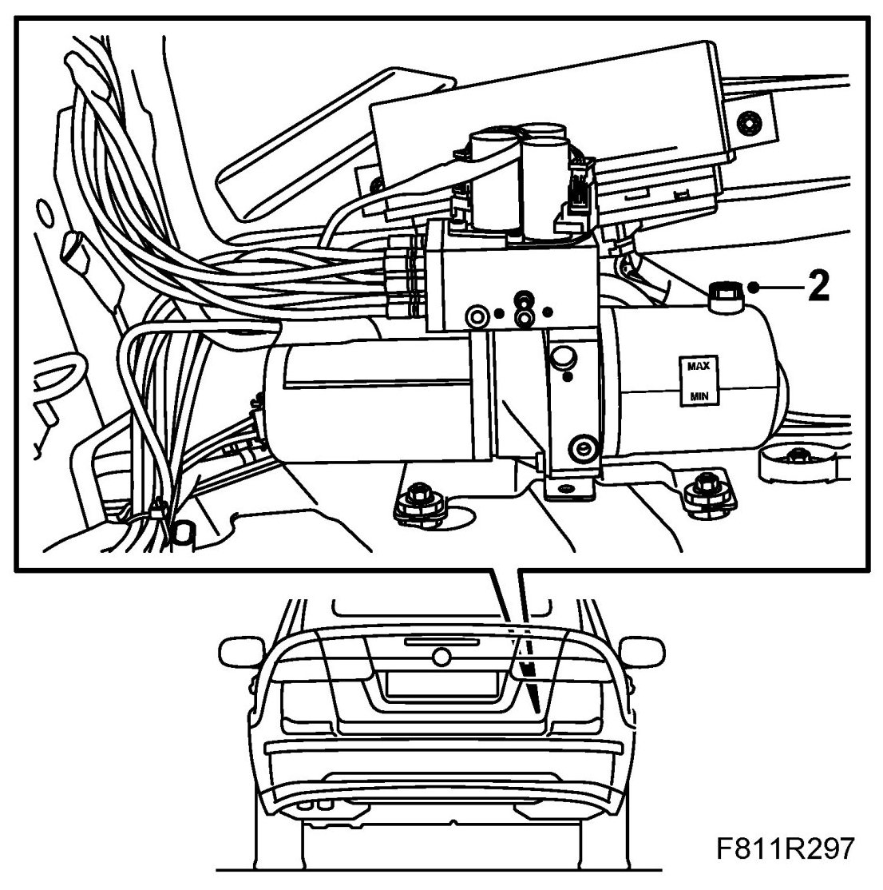
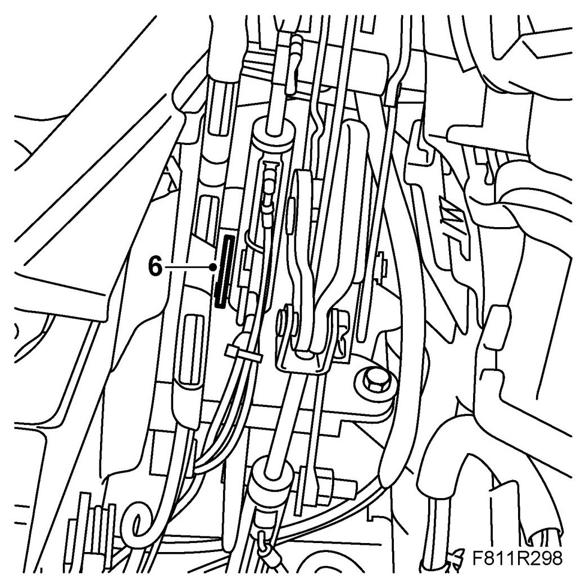
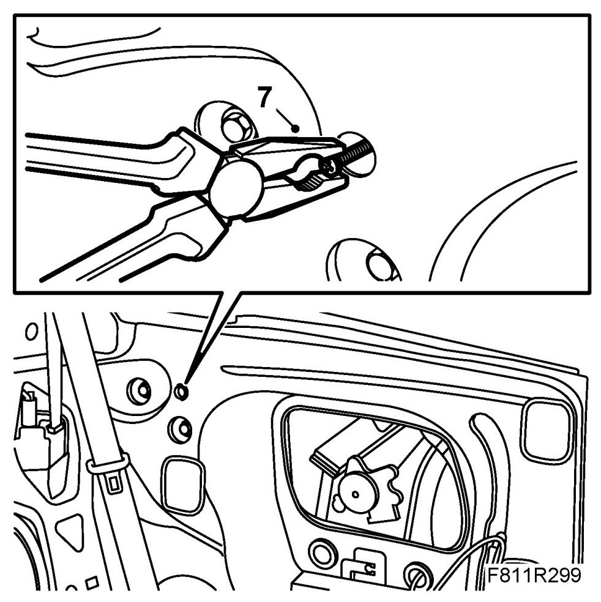
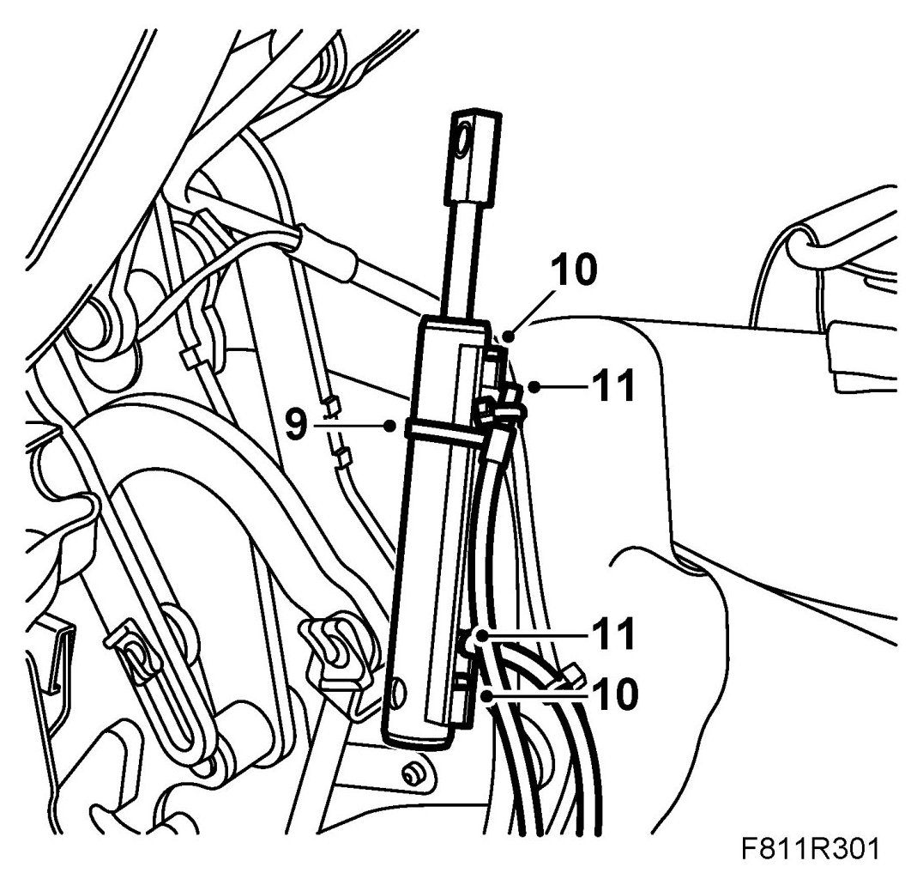
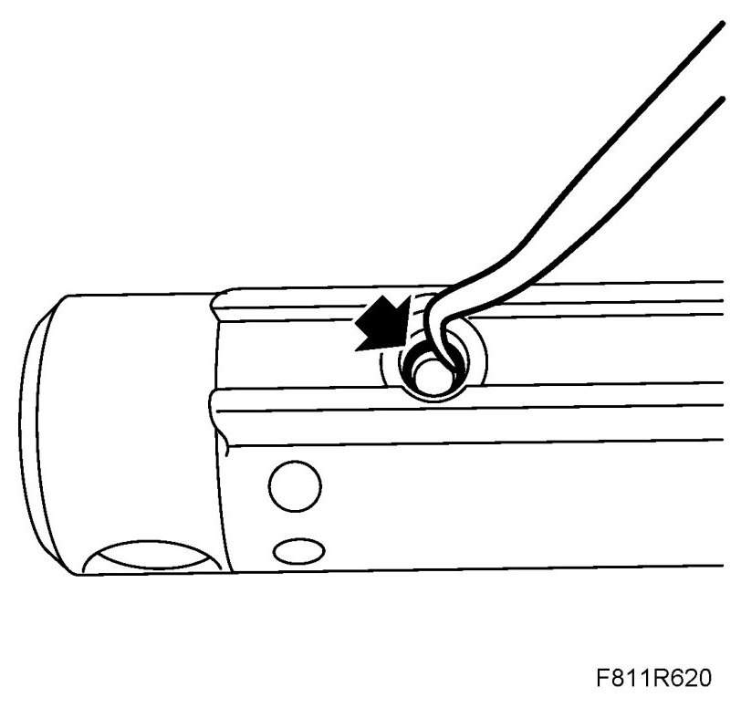
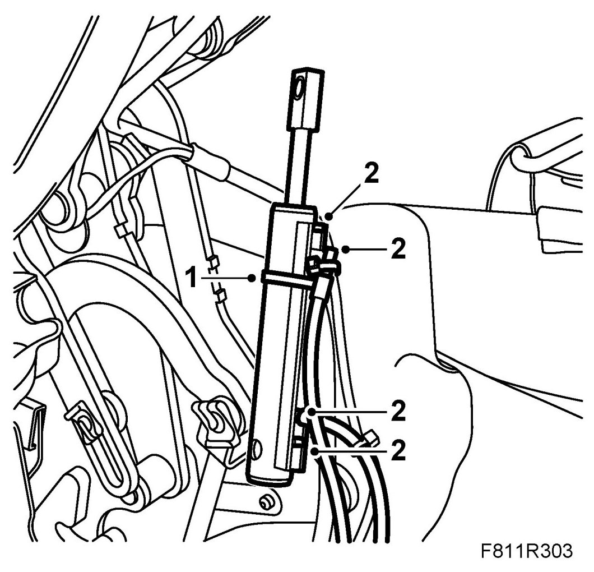
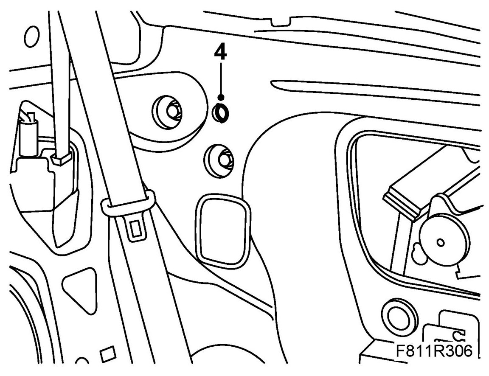
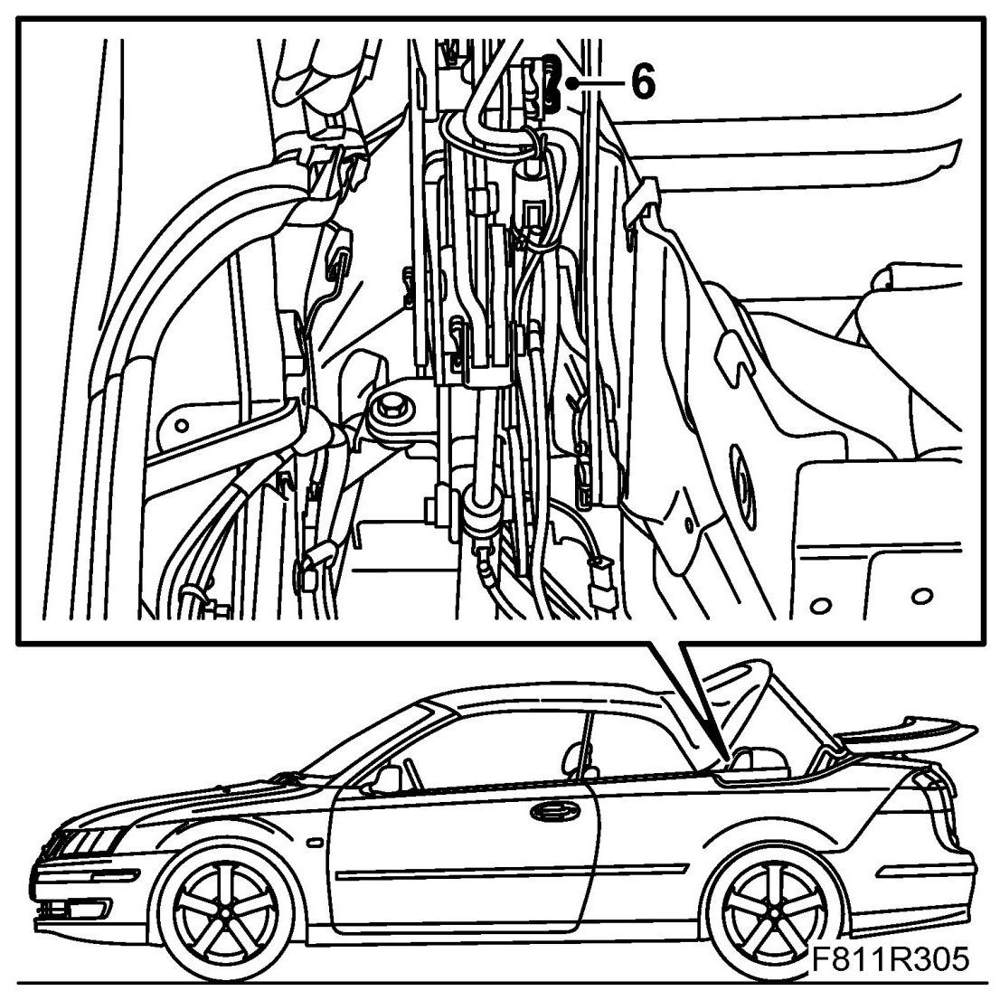

Sixth Bow Hydraulic Cylinder
Sixth Bow Hydraulic Cylinder
Removing
1. Open the boot lid. Remove Luggage compartment side trim, CV (right-hand side).
2. Remove the fluid filler plug from the hydraulic system reservoir (to equalise the pressure). Refit the plug.

3. Open the soft top completely.
4. Remove Seat cushion, rear seat, CV, Backrest, rear seat, CV and Rear side trim, CV.
5. Close the soft top and leave the soft top cover and sixth bow open. Secure with 82 93 847 Soft top support.
6. Remove the pin lock.

7. The hydraulic cylinder fastening pin must be drawn out through the opening in the torsion box side plate. Screw an M5 bolt (min. 40 mm long) into the internal thread of the fastening pin. Then pull out the fastening pin with a pair of pliers.

8. Remove the main cylinder piston rod from the fastening pin on the soft top mechanism and lift out the cylinder.

9. Right-hand side: Remove the position sensor cable tie.
Remove the position sensor cable connector (grey).
10. Remove the hydraulic line retaining clips by pulling them out. Place some paper under the hydraulic cylinder to catch any hydraulic fluid that may run out.
11. Pull out the hydraulic lines from the hydraulic cylinder and remove the hydraulic cylinder.
IMPORTANT: Mark the hydraulic lines and their connection on the hydraulic cylinder as they must not get mixed up.
12. Right-hand side: Remove the position sensor from the hydraulic cylinder. Use a screwdriver to carefully lift off the sensor from the hydraulic cylinder.
Fitting
1. Right-hand side: Fit the position sensor on the hydraulic cylinder. Plug in the position sensor cable connector (grey).
2. Remove the O-rings of the hydraulic cylinder using a blunt tool. Check the Orings and replace as necessary. Then fit the O-rings on the hydraulic lines before refitting the lines on the hydraulic cylinder. Use only one O-ring per hydraulic line.

Attach the hydraulic lines to the hydraulic cylinder by pressing them in.

IMPORTANT: Cables to hydraulic lines and position sensors must be refitted as they were earlier or there will be a risk of them being damaged when the soft top and soft top cover are operated.
3. Put the hydraulic cylinder in mounting position. Fit the piston rod on the soft top mechanism fastening pin.
4. Put the cylinder in place and press in the lower fastening pin from inside. Press in the pin until the groove for the locking ring is visible.

5. Fit the locking ring.
IMPORTANT: Cables to hydraulic lines and position sensors must be refitted as they were earlier or there will be a risk of them being damaged when the soft top and soft top cover are operated.
6. Fit the cable tie for the position sensor cables and for the hose package where appropriate.

7. Remove the soft top support and open the soft top manually.
8. Open and close the soft top for 5 complete cycles to bleed the system and check the location of the cables and hose package.
9. Check for any fluid leaks.
10. Check the oil level and top up as necessary. See Checking/filling oil.
11. Fit Luggage compartment side trim, CV
12. Fit the Rear side trim, CV , Backrest, rear seat, CV and Rear seat cushion, CV.
13. Cars with pinch protection: Carry out Programming the pinch protection.
14. Connect the diagnostics tool and erase any diagnostic trouble code.